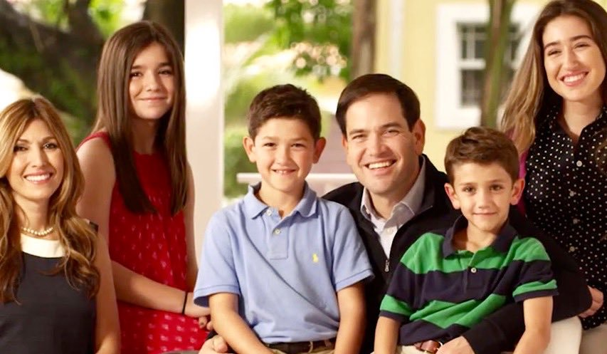

About
Meet Dwain
Dwain is a lifelong Michigander. He studied Secondary Education and Social Studies teaching at Grand Valley State University. Dwain has spent over ten years in the education realm. Currently, he is a High School Social Studies teacher in inner-city Grand Rapids. Dwain is a proponent for creating a system in which everyone has the ability to make the best of themselves; where everyone starts out on an equal playing field. “No longer should race, gender, disability, sexual orientation, age or wealth play a part in how much some can make of oneself. It should only be hard work and dedication that defines how far someone can go and what they can become.” He is dedicated to ensuring every child has equal access to an excellent education and demands social equality, democratic rights, and protections for all Michiganders.
Many people have asked me why I decided to run for Governor? This is a loaded question that is not always easy to answer. When I decided to run for the State Board of Education in 2012 it was to oppose Snyder's push for charter schools and the privatization of our public school system. This is still a fight I continue. I watched as he placed his emergency managers into our communities and forced his agenda and cut corners. This policy aided in the people of Flint being poisoned and his refusal to administer appropriate solutions. It has also resulted in the Muskegon Heights School District being turned into a Charter and now facing a list of fees to pay to become a public school district again. (They are also on the current closure list). Daily, I work with students who live in a generational poverty that established career politicians ignore.
I, like many others, am overworked and underpaid. I answered calls from friends and family on the day of Trump's elections who were worried about themselves and their families. My ninety-year-old grandmother called me worried about her social security. A friend called me worried about her marriage to her new wife. Another friend called me worried about her daughter's safety as she is transitioning and another because she is Jewish. I was concerned for them and still am. It was then that I decided to run for Governor. To show people that there are still people who support everyone and who will speak out in their defense. This campaign has become more than just a run for governor, but a call to bring people together for the greater good. Minor differences between people, groups, and organizations pale in comparison to the rich and corporations expelling our democracy for their personal gain. They have enjoyed the freedoms of this country unchecked, through our hard labor, for far too long. Let us stand together. Tell your family, your friends, your co-workers and neighbors that we all deserve better than hurtful Republican ideology and responsive band-aids from Democrats.
